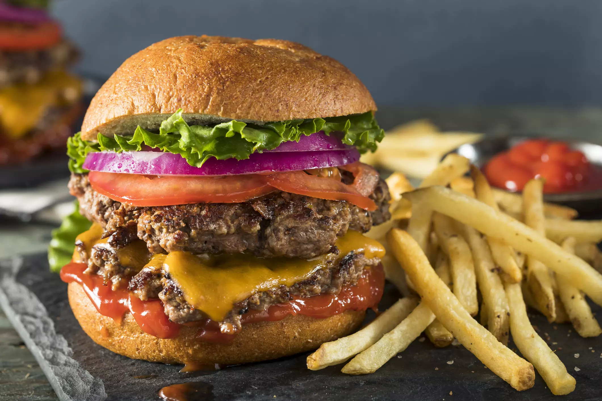

Bài Viết Nổi Bật

Nghệ Thuật Plating Trong Fine Dining
Plating không chỉ là cách bày trí món ăn mà còn là nghệ thuật truyền tải cảm xúc và đẳng cấp của ẩm thực cao cấp.
Đọc thêmCác Bài Viết Khác
Bí Quyết Chọn Nguyên Liệu Cao Cấp
Nguyên liệu tươi ngon là nền tảng của mọi món ăn Fine Dining.
Xu Hướng Ẩm Thực 2025
Khám phá những xu hướng mới trong thế giới F&B cao cấp.
Hành Trình Của Một Đầu Bếp Michelin
Câu chuyện phía sau những ngôi sao Michelin danh giá.